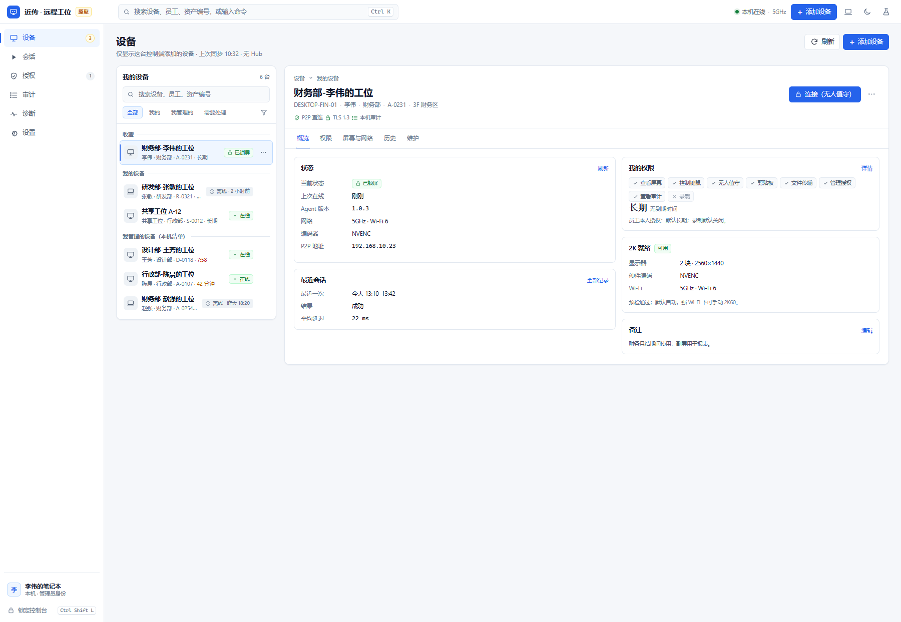
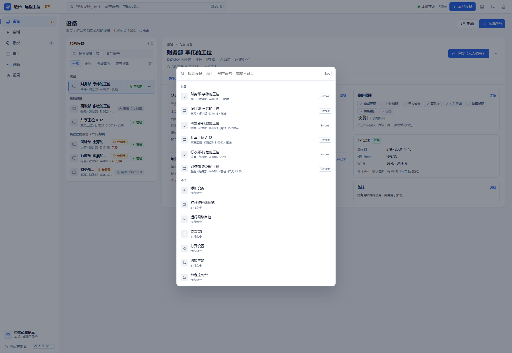
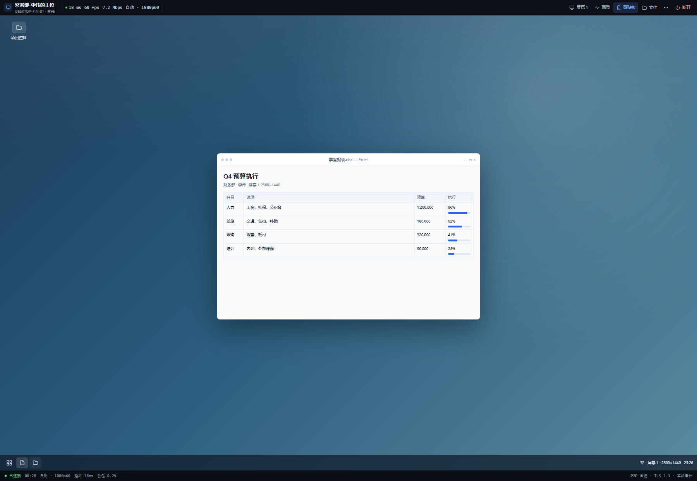
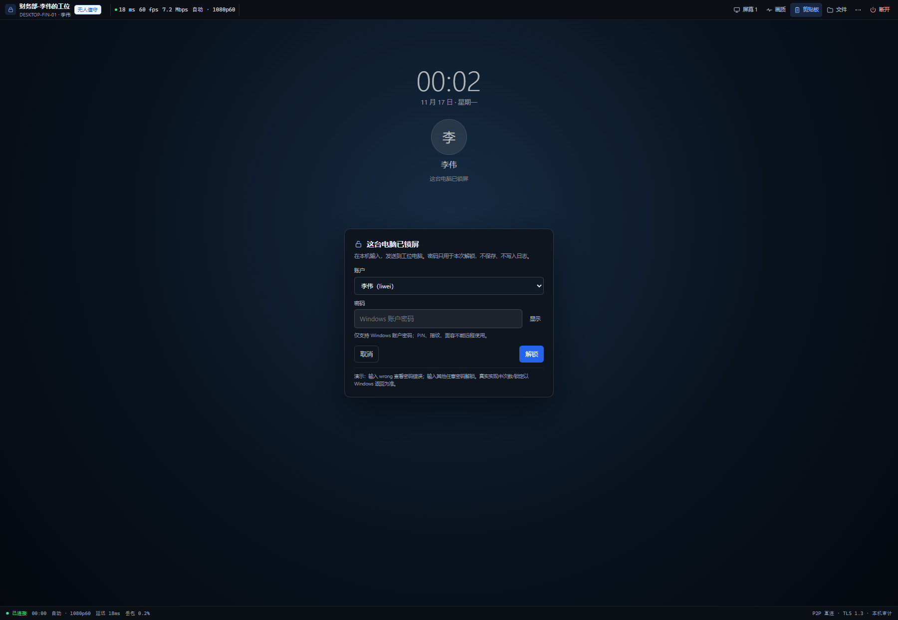

设备控制台
设备、会话、授权、审计、诊断与设置集中在一个窗口。在线状态、最近会话和当前权限一目了然。
局域网 P2P、不经过云端、锁屏可连（内测）、设备授权、群聊与私聊一体。为同一间办公室里的临时远程与 IT 支持而设计。

设备、连接、授权与协作集中在一个工作台里。没有新的账号体系，也没有中心服务器。
设备、会话、授权、审计、诊断与设置集中在一个窗口。在线状态、最近会话和当前权限一目了然。
被控端生成 6 位配对码，控制端输入后在工位电脑确认。无需公网地址，也不用额外注册账号。
传输真实屏幕与键鼠输入，支持常用快捷键、滚轮、剪贴板与锁屏解锁，操作方式与坐在工位前一致。
双屏按显示器切换查看，根据网络状况调整画质与帧率。5GHz Wi-Fi 下优先保证操作流畅。
团队群聊与一对一同事私聊同在工作台。讨论、支持请求与设备信息不必再切到外部聊天工具。
每台电脑都能作为被控端。本机授权码、连接请求与临时授权由使用者本人确认，可随时结束会话。
设备、会话、授权、审计、诊断和设置共享同一套界面与操作逻辑，减少在多个工具之间来回切换。

会话窗口独立呈现工位屏幕，键盘、鼠标与常用快捷键直接送达被控端。需要时可在会话内解锁工位锁屏。

近传不建立新的账号体系，也不把屏幕与输入送到云端。授权范围、到期时间和会话行为由工位电脑与使用者掌握。
控制端与被控端在同一网络内直接建立连接，屏幕与输入不经过云端或第三方中转服务器。
没有中心服务器保存会话与设备清单；设备、授权和审计数据留在各自的工位电脑上。
连接与解锁沿用本机的 Windows 账户体系，不创建独立的产品密码或组织账号。
远程解锁只接受 Windows 账户密码。PIN、指纹、面容等本机验证方式不能在远程会话中使用。
会话默认不录制屏幕，也不在后台保留画面。是否留存操作记录由本机授权与审计设置决定。
管理员授权默认 8 小时到期，无人值守模式默认关闭；需要时由工位端明确开启。

远程支持往往从一句“你现在方便吗”开始。近传把团队群聊、同事私聊与设备控制放在同一处，不必在外部 IM 与远控工具之间来回切换。
把讨论、文件与支持请求放在同一个房间。设备信息可以直接贴给同事，减少来回确认。
一对一说明问题、发送截图或约一个远程时间，不必切换到手机上的外部聊天应用。
无需外部账号；消息与文件不经过公网服务。
为同一间办公室、同一层楼或同一 VLAN 里的短时远程而设计。
笔记本接入同一 VLAN，连回桌面继续处理会议材料、报表与内部系统。
管理员在授权时限内接管工位，处理软件与设置问题，到期后自动失效。
按设备与账号授权使用，不共享 Windows 密码，也不留下长期权限。
把设备、文件和同事放在同一个工作台，支持请求不必离开内网。
近传不是公网远程桌面的替代品。它适合局域网内、有人值守的 Windows 工位。
需要公网远程？请使用公司批准的 VPN 与远程办公方案。近传不提供公网穿透，也不替代组织的集中管理平台。
控制端与被控端都运行 Windows 桌面版。安装包和离线更新包由内部 IT 统一提供。
| 操作系统 | Windows 10 / 11 x64 |
|---|---|
| 网络 | 控制端与被控端在同一 Wi-Fi 或 VLAN，局域网互通 |
| 无线 | 建议 5GHz；2.4GHz 可用于轻量操作 |
| 画面 | 支持 1080p 至 2K，双屏可切换 |
| 安装 | 内测安装包与离线更新包，由内部 IT 分发 |
| 账号 | 使用本机 Windows 账户，不新建产品账号 |
更新使用离线包，由内部 IT 统一下发。内测阶段不提供面向公网的下载或自动更新通道。